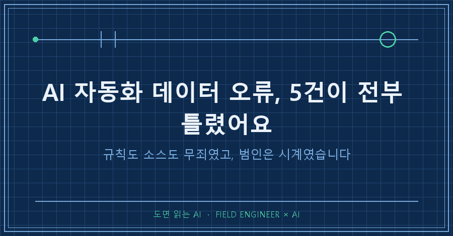
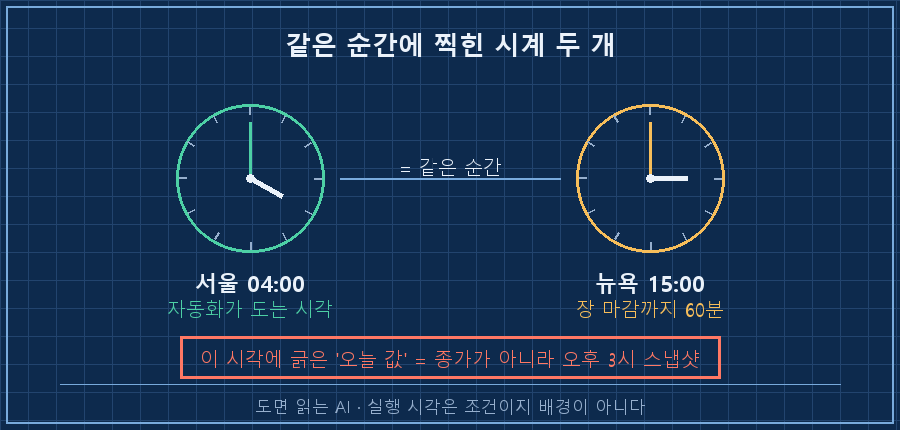
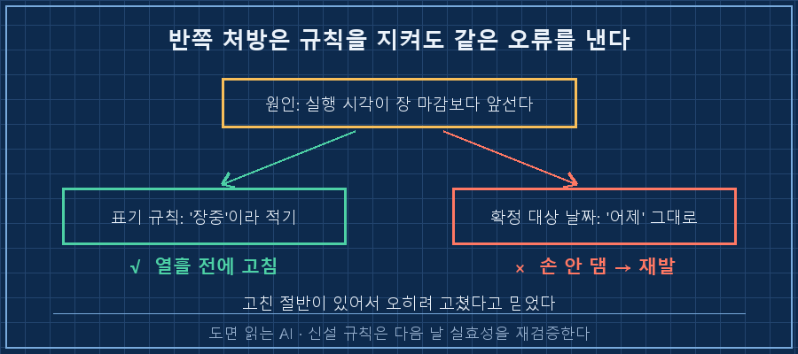
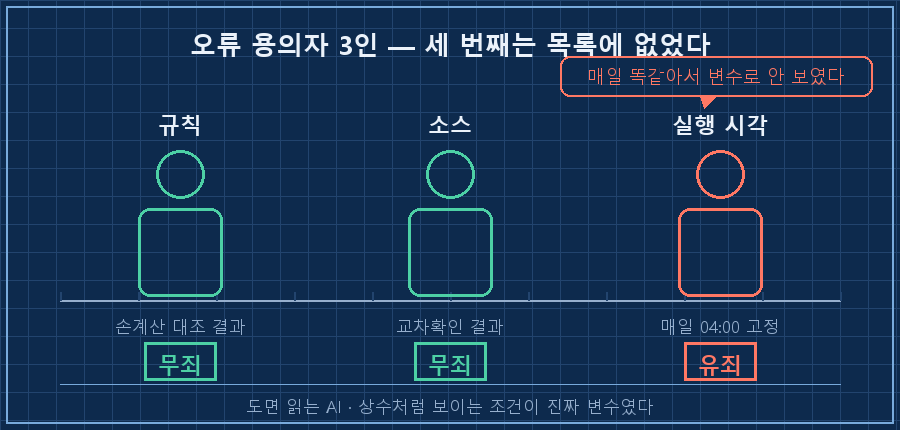

어제 아침에 읽은 숫자 다섯 개가 오늘 보니 전부 틀려 있었어요.
새벽 4시에 혼자 도는 제 자동화가 만들어두는 요약 문서 얘기인데, 하필 그 다섯 개가 전부 "확정"이라고 도장이 찍혀 있던 값들이었습니다. 잠정이라고만 적혀 있었어도 제가 알아서 걸러 읽었을 텐데요.
AI 자동화 데이터 오류가 나면 저는 늘 두 가지만 의심했습니다. 규칙이 틀렸나, 아니면 소스가 틀렸나. 이번엔 둘 다 무죄였어요. 범인은 세 번째였는데, 그게 제 용의자 목록엔 아예 없던 항목이었습니다 — 자동화가 도는 시각이요.
2026년 9월 기준이고, 매일 정해진 시각에 웹에서 값을 긁어 요약 문서를 한 장 만들어두는 개인용 자동화 얘기예요. 대상이 주가든 환율이든 설비 일보든, 매일 같은 시각에 도는 구조면 똑같이 생깁니다.
저는 현장에서 기계 상태를 숫자로 읽고 합격·불합격을 판정하는 일을 15년쯤 했어요. 그 일이 몸에 배어서 숫자가 틀리면 먼저 계기부터 의심하는 버릇이 있는데, 이번엔 그 버릇이 제 발목을 잡았습니다.
1. 이틀 전에 세운 검증 규칙은 멀쩡했어요
며칠 전에 소스마다 값이 다른 문제를 하나 풀었어요. 네 군데서 받아 적은 마감값이 전부 다를 때, 값끼리 비교하지 말고 각 소스의 변화량을 더해 전날 값을 역산하면 네 개가 한 점으로 모인다는 규칙이었습니다.
그 규칙은 이번에도 완벽하게 돌았어요. 역산한 네 건이 통신사 마감 기사와 소수점 둘째 자리까지 전건 일치했고, 한 칸 더 거슬러 올라간 값도 기존 확정치와 다시 맞았습니다.
그래서 더 헷갈렸어요. 검증 규칙이 100점인데 결과가 틀려 있으니까요.
소스도 뒤집어봤는데 소스도 멀쩡했습니다. 이쯤 되면 보통 "그럼 뭐가 문제냐" 하고 하루를 통째로 태우게 되죠..
실행 로그도 아주 태연했어요. 익명화해서 옮기면 이렇습니다.
[2026-09-11 04:00:02] 브리핑 시작
[2026-09-11 04:17:25] 종료코드: 017분 동안 아무 사고 없이 잘 끝났다고 찍혀 있죠. 그 17분이 통째로 장이 열려 있는 시간이었다는 건 로그 어디에도 안 나옵니다.
2. 새벽 4시는 뉴욕의 오후 3시였습니다
답은 시차표 한 줄이었어요.
한국시각 04:00은 미국 동부 15:00입니다. 그쪽 증시는 16:00에 닫히니까, 제 자동화가 도는 순간엔 장이 아직 한 시간 더 열려 있는 상태였어요.
그러니까 그 시각에 웹에 떠 있는 "오늘 값"은 종가가 아니라 오후 3시에 찍힌 스냅샷입니다. 자동화는 그걸 성실하게 긁어와서 이렇게 앉혀놨고요.
[확정] 전일 종가 7,682 ← 실제 확정값은 7,673.52
다섯 건의 어긋난 폭은 이랬어요. 게재치는 여러 소스 범위, 확정치는 마감 후 값입니다.
| 항목 | 자동화가 적은 값 | 실제 확정값 | 성격 |
|---|---|---|---|
| 해외 대표 지수 A | 7,681.96 ~ 7,683.48 | 7,673.52 | 장중 스냅샷 |
| 해외 대표 지수 B | 52,776.58 ~ 52,800.65 | 52,786.07 | 장중 스냅샷 |
| 해외 대표 지수 C | 26,379.01 ~ 26,452.10 | 26,421.41 | 장중 스냅샷 |
| 소형주 지수 | 2,972.54 ~ 2,973.93 | 2,960.20 | 장중 스냅샷 |
| 변동성 지표 | 15.30 | 15.72 | 장중 스냅샷 |
재밌는 건 어긋난 방향이 제각각이라는 거예요. 어떤 건 높게, 어떤 건 낮게 적혔습니다. 한쪽으로 쏠렸으면 진작 눈치챘을 텐데, 골고루 틀려서 그냥 오차처럼 보였어요..
3. 라벨 규칙은 이미 있었는데 또 났습니다
여기서 제일 부끄러운 부분을 적어야겠네요.
"마감 전 값을 쓸 땐 반드시 장중이라고 적는다"는 규칙, 저는 이미 열흘 전에 넣어뒀습니다. 그런데도 똑같은 사고가 났어요.
이유는 그 처방이 원인의 절반만 짚었기 때문이었습니다. 라벨을 붙이라고만 했지, 어느 날짜까지 확정으로 부를 수 있는지는 안 고쳤거든요. 그러니 자동화는 표기만 조심하면서 여전히 어제 값을 확정 칸에 넣고 있었습니다.

그래서 이번엔 규칙을 이렇게 고쳤어요. 실제 지시서에 들어간 문장을 옮기면 이렇습니다.
- 04:00 시점에 확정 표기가 가능한 최신 종가는 '어제'가 아니라 '그저께'다.
- 어제 값은 예외 없이 '장중'으로 적는다.
- 역산·이중확인 규칙은 그대로 두되, 적용 대상 날짜를 하루 뒤로 민다.검증 방법을 바꾼 게 아니라 적용 날짜만 한 칸 민 거예요. 그 한 칸이 다섯 건을 살렸습니다!
4. 용의자 목록에 '언제'를 넣었어요
그래서 AI 자동화 데이터 오류를 뒤지는 순서 자체를 바꿨어요. 원래 두 명이던 용의자를 셋으로 늘렸습니다.
1. 규칙이 틀렸나 — 계산식·판정 기준을 손계산으로 대조
2. 소스가 틀렸나 — 다른 출처로 교차확인
3. 내가 이걸 언제 하고 있나 — 실행 시각이 데이터가 확정되는 시각보다 앞서 있는지

3번이 왜 빠져 있었는지도 알겠더라고요. 매일 똑같이 반복되는 조건은 너무 당연해서 변수 후보에 안 오릅니다. 새벽 4시는 제가 정한 값이고 반년 넘게 한 번도 안 바뀌었으니까, 그건 제 머릿속에서 조건이 아니라 배경이었어요.
자동화를 만들 때 실행 시각은 보통 "내가 아침에 읽기 편한 시간"으로 정하잖아요. 그게 데이터가 확정되는 시각과 맞는지는 아무도 안 물어봅니다. 저도 안 물어봤고요..
미리 답해두면 좋을 두 가지
Q. 그냥 자동화를 늦게 돌리면 되지 않나요?
그게 정답인 경우도 있어요. 다만 저는 못 늦춥니다. 늦추면 제가 아침에 읽을 문서가 없어지거든요. 실행 시각을 못 옮길 땐 대신 확정 가능한 범위를 줄이는 쪽으로 갑니다. 오늘 것은 잠정, 그저께 것은 확정으로 나누는 식이요. 시각을 바꾸는 것과 표기를 바꾸는 것 중에 뭘 고를지는 그 문서를 누가 언제 읽느냐가 정해줍니다.
Q. AI 자동화 데이터 오류가 값이 조금 틀린 정도면 그냥 넘어가도 되지 않나요?
숫자 하나만 보면 그렇게 보여요. 문제는 그 숫자에 확정이라는 도장이 찍혀 있었다는 겁니다. 잠정이라고 적혀 있으면 사람이 알아서 걸러 읽는데, 확정이라고 적혀 있으면 그대로 다음 판단의 재료가 되죠. 게다가 매일 같은 시각에 같은 방식으로 틀리니까, 오류가 누적되는 게 아니라 습관처럼 굳습니다.
정리하면 이번에 고친 건 검증 방법이 아니라 검증하는 시점이었어요. 규칙은 무결했고 소스도 멀쩡했는데, 그 좋은 규칙을 잘못된 날짜에 대고 쓰고 있었던 겁니다. 여러분의 자동화는 몇 시에 도나요? 그리고 그 시각에 여러분이 필요한 데이터는 이미 확정된 값인가요?
이런 식으로 제 자동화가 언제 어떻게 틀렸는지는 makefield.ai에 날짜별로 남겨두고 있습니다.
태그: #AI자동화데이터오류 #자동화실행시각 #AI데이터검증 #자동화디버깅 #AI오류원인찾기 #AI결과물검수 #AI팩트체크 #자동화모니터링 #AI에게일시키기 #AI판단검증 #자동화브리핑 #파이썬자동화 #개인AI에이전트 #AI실무활용 #도면읽는AI